class: left, top, title-slide background-image: url('images/cluster_pic.jpg') <h1> Intro to Open OnDemand</h1> <h3> Center for Advanced Research Computing <br> University of Southern California <br> <h3> <div class="footnote"> <p> Last updated 2022-03-11</p> </div> --- ## Outline <a href="https://carc-ondemand.usc.edu"> 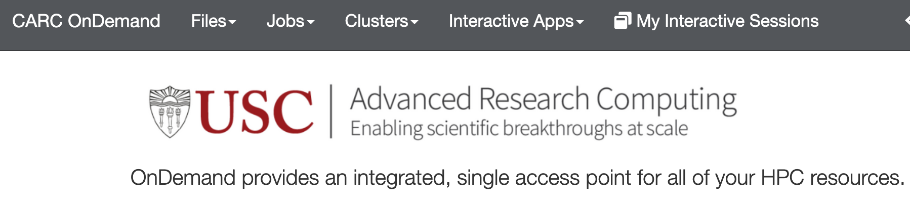 </a> - File explorer - Upload/Download Files - Creating files - Submitting jobs - Terminal - Interactive Apps - Jupyter Notebooks - RStudio --- ## Files tab <a href="https://carc-ondemand.usc.edu"> 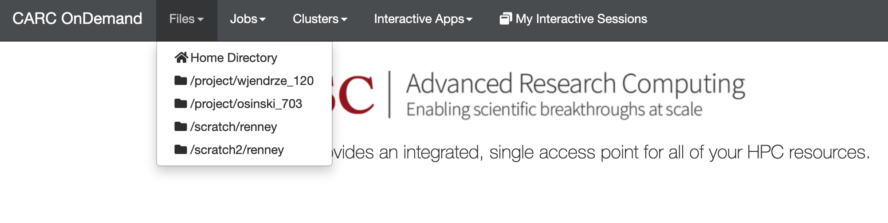 </a> - Clicking on the "Files" tab you should see a list of all your directories <a href="https://carc-ondemand.usc.edu"> 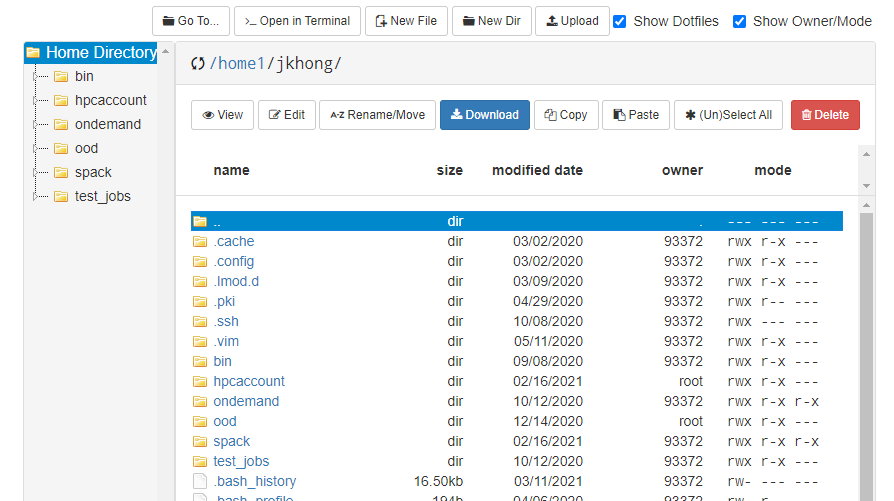 </a> - Clicking on a directory will display the contents - You can view, edit, or up/download files using the browser --- ## Submitting jobs <a href="https://carc-ondemand.usc.edu/pun/sys/myjobs/workflows"> 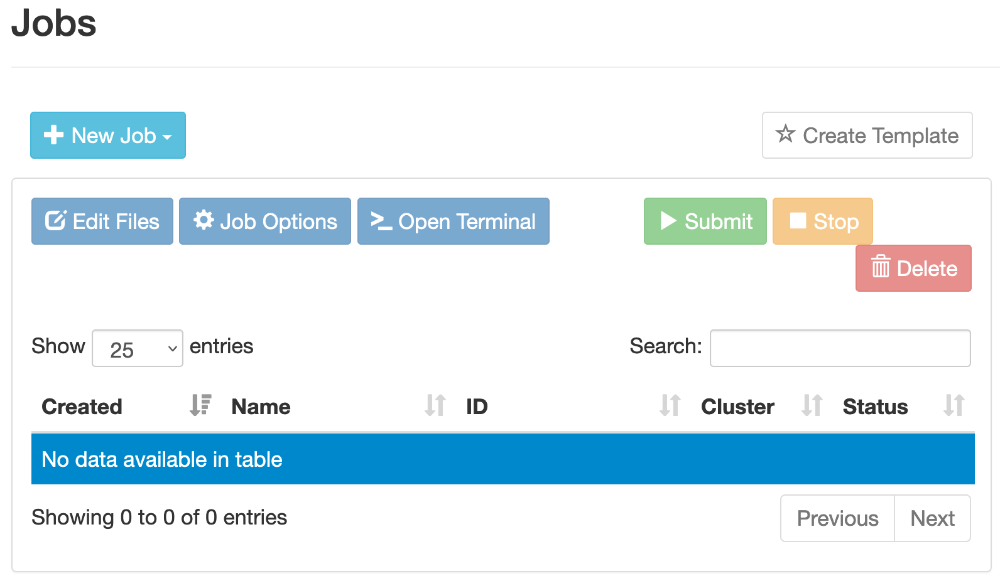 </a> - You can submit jobs using "job composer" - OOD provides some template job scripts - You may need to customize `job.sh` to suit your use case <a href="https://carc-ondemand.usc.edu/pun/sys/myjobs/workflows"> 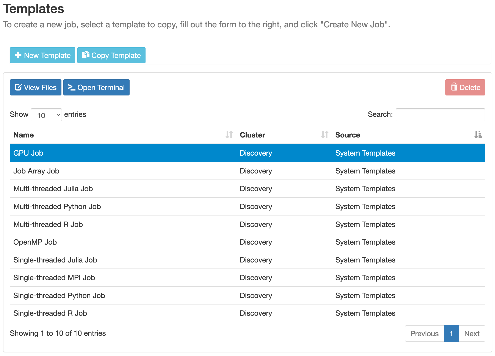 </a> --- ## Submitting jobs <a href="https://carc-ondemand.usc.edu/pun/sys/myjobs/workflows"> 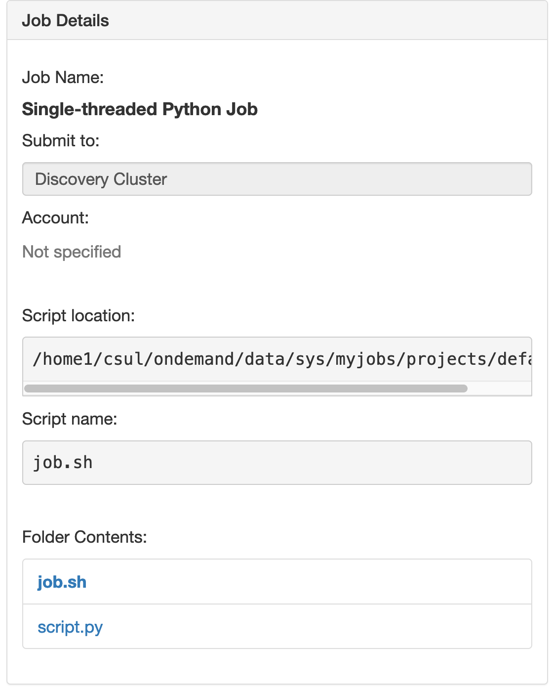 </a> - Jobs can be created from your existing scripts - You will need to specify where the job script lives - Note that the directory is coppied to your home dir - Directory should hold all files needed for job --- ## Submitting jobs <a href="https://carc-ondemand.usc.edu/pun/sys/myjobs/workflows"> 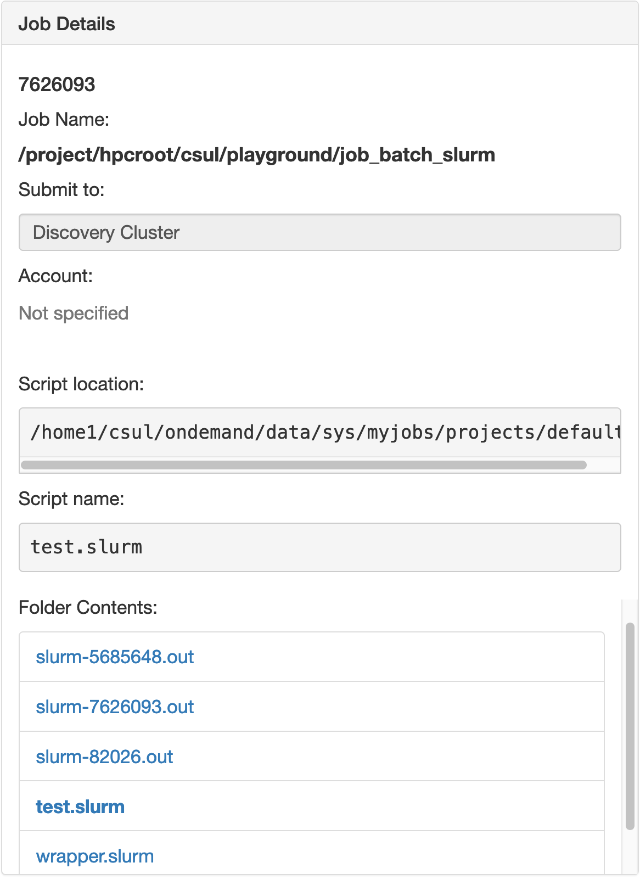 </a> <a href="https://carc-ondemand.usc.edu/pun/sys/myjobs/workflows"> <img src="images/ood_job_manage.png"/ style="float:right; width:40%"> </a> - After job submission you can - Track job progress - Cancel job - Check folder contents --- ## Terminal Access <a href="https://carc-ondemand.usc.edu/pun/sys/myjobs/workflows"> 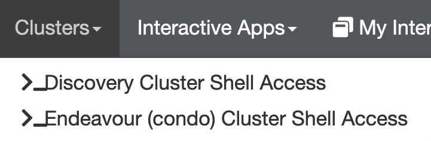 </a> - You can request terminal access from the "Clusters" tab. - Normal terminal accessible from browser --- ## Interactive Apps - Currently two "interactive apps" - JupyterLab - RStudio Server - Submit jobs run apps on compute node interact with browser --- ## Getting Compute Resources <a href="https://carc-ondemand.usc.edu/pun/sys/myjobs/workflows"> 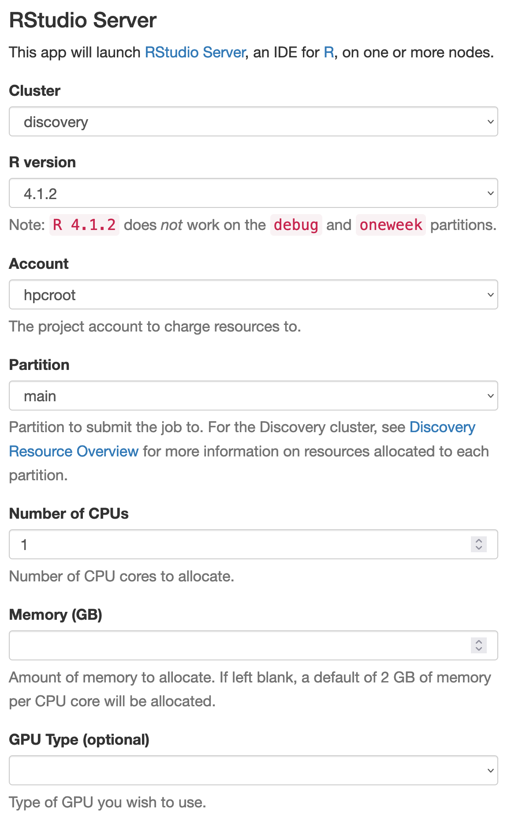 </a> - Before launching app you will need to get a compute node |Resource type| | |---|---| | Cluster| discovery or endeavor (condo)| |Account| Which allocation to charge compute time to| |Partition|usually `debug` or `main`| |Number of CPUs| | |GPUs | (optional)| |Number of GPUs| 0,1, or 2| |Time | Max 4 hours| |Constraint |Type of node you want| --- ## Getting Compute Resources 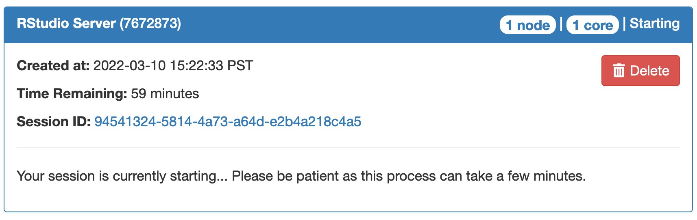 - After filling in desired values request is sent to queue - When compute resources are ready, you can connect 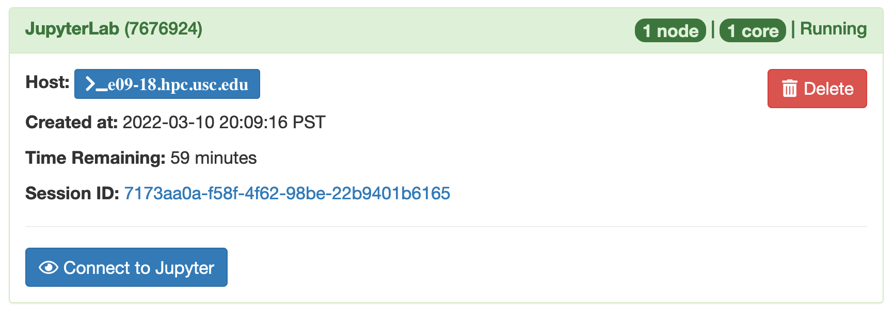 - Please note that there is no internet access - Download dependencies and data beforehand --- ## RStudio - RStudio will provide login credentials 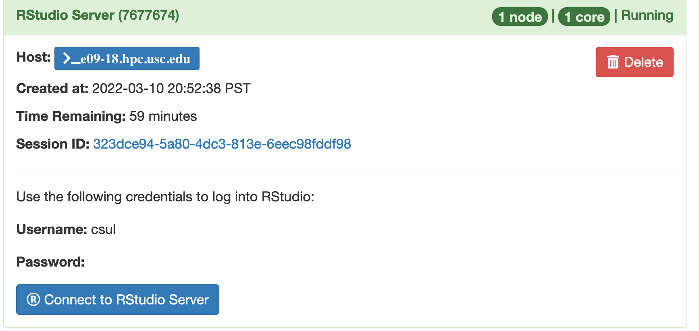 --- ## RStudio 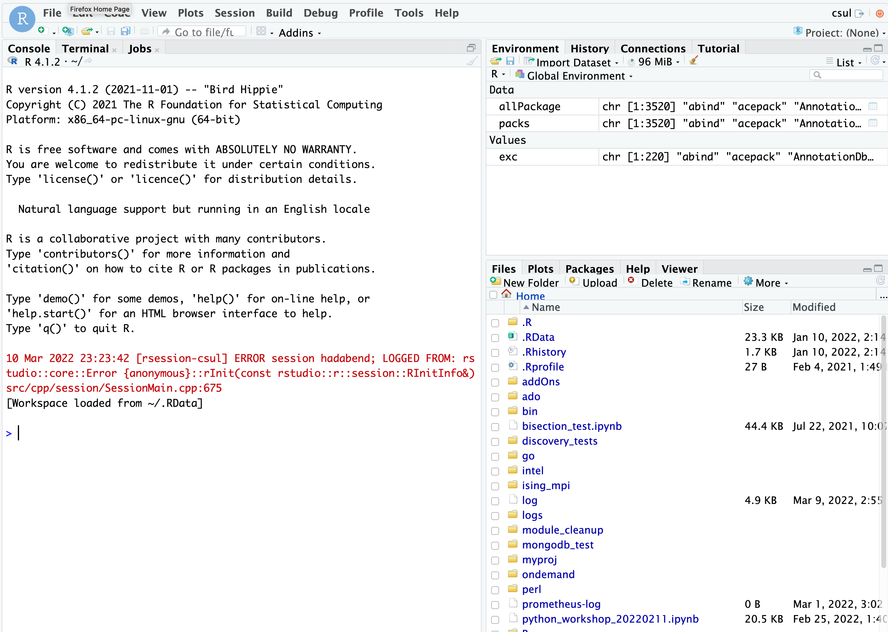 - Any R libraries you have installed should be available - If there are other required dependencies let us know --- ## JupyterLab - Similar to RStudio but works with multiple languages 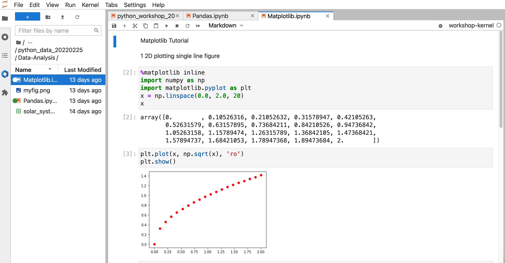 --- ## JupyterLab 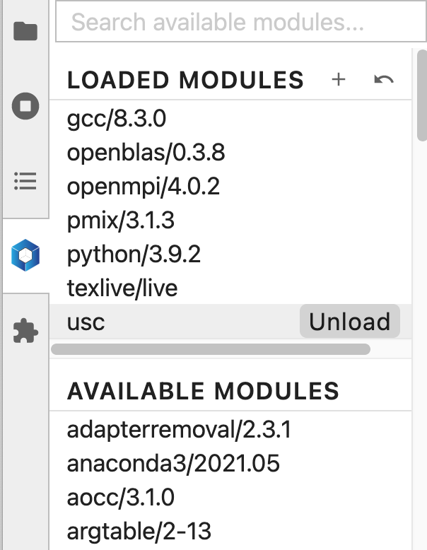 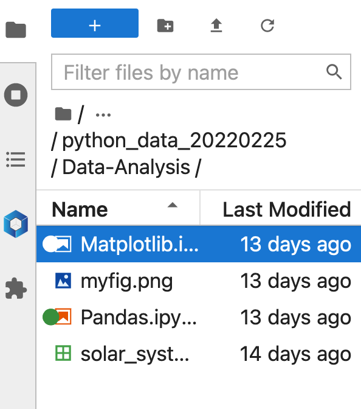 - Default "kernel" is python - Files accessible through browser - USC modules are available - Make sure to restart kernel if you load new modules --- ## Adding JupyterLab Kernels - Kernel interprets code you type into notebook - If you like Jupyter Notebooks you can install kernels for other languages - https://github.com/jupyter/jupyter/wiki/Jupyter-kernels - See [Installing Jupyter Kernels](https://www.carc.usc.edu/user-information/user-guides/software-and-programming/jupyter-kernels) for detailed instructions - If you have an Anaconda environment you can create a kernel for it ```bash module purge conda activate myenv conda install -c conda-forge ipykernel python -m ipykernel install --user --name myenv --display-name "My env" ``` --- ## Resources - CARC home page - https://carc.usc.edu - CARC User Forum - https://hpc-discourse.usc.edu/categories - SLURM tutorials - https://slurm.schedmd.com/tutorials.html - SLURM quick reference - https://slurm.schedmd.com/pdfs/summary.pdf --- count: false ## Resources - CARC home page - https://carc.usc.edu - CARC User Forum <- the most value for the community! - https://hpc-discourse.usc.edu/categories - SLURM tutorials - https://slurm.schedmd.com/tutorials.html - SLURM quick reference - https://slurm.schedmd.com/pdfs/summary.pdf --- ## Getting Help - Request assistance - Email carc-support@usc.edu - Office Hours (drop-in) - Every Tuesday@2:30pm (Zoom) - Learn more! - Visit carc.usc.edu - Request a consultation (anytime) - Attend a Workshop (when scheduled) --- # Thank you for attending! # Questions? # carc-support@usc.edu